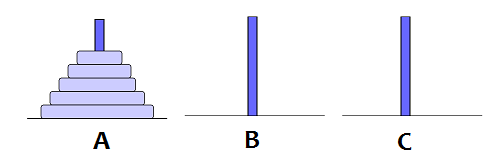

Trong bài toán Tháp Hà Nội, có n đĩa theo thứ tự từ nhỏ đến lớn đang nằm ở cột A như hình bên dưới.

Cần chuyển n đĩa trên từ cột A sang cột B (lấy C làm cột trung gian) theo quy tắc:
- Mỗi lần chỉ chuyển một đĩa.
- Đĩa nhỏ phải nằm trên đĩa lớn tại bất kỳ thời điểm nào trong quá trình chuyển.
Để giải bài toán trên, người ta dùng giải thuật đệ quy. Giải thuật này cho kết quả là 2n-1 bước chuyển, là số bước chuyển ít nhất cần thực hiện.
Sau khi học xong giải thuật đệ quy trên tại trường Đại học Nha Trang, vị thần trong cây đèn của Aladin lập tức bay ra Hà Nội để chuyển đĩa thử. Tuy nhiên mới chỉ thực hiện được k bước chuyển (k ≤ 2n-1) thì vị thần đói bụng quá nên tạm nghỉ để đi ăn. Bạn hãy tính xem tại lúc này, số đĩa hiện có trên mỗi cột là bao nhiêu.
Dữ liệu nhập:
- Là hai số nguyên n và k cách nhau một khoảng trắng ((1 ≤ n ≤ 10, 1 ≤ k ≤ 2n-1).
Dữ liệu xuất:
- Là ba số nguyên a, b, c thể hiện số đĩa trên các cột A, B, C sau k bước chuyển. Ba số cách nhau một khoảng trắng.